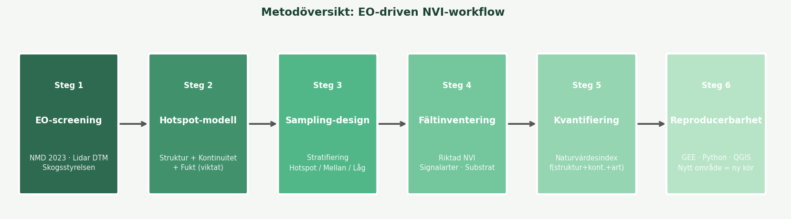
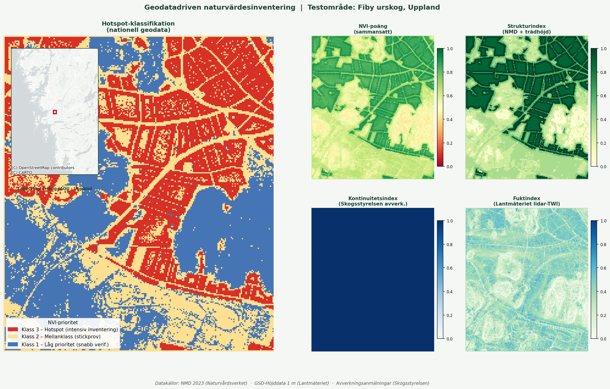

En reproducerbar hybridmetod som bygger på svenska nationella öppna geodata för att prioritera och effektivisera naturvärdesinventering i fält.
Klassisk naturvärdesinventering är resurskrävande och beror av var inventeraren råkar leta. Med fjärranalys kan vi modellera var naturvärden sannolikt finns — och rikta fältarbetet dit det gör störst nytta.
Inventeraren söker fritt i fält baserat på erfarenhet och tillgänglig tid. Resultatet beror starkt av var man väljer att gå, och det är svårt att upprepa eller skala upp metoden till nya områden.
"Gå ut och leta naturvärden"
Nationella geodata (NMD 2023, Skogsstyrelsen) och lidar-DTM (Lantmäteriet) används för att identifiera potentiella värdekärnor innan fältbesöket. Fältarbetet stratifieras och riktas — mer tid på rätt ställen, färre resurser på lågprioriterade ytor.
"Modellera → verifiera → klassificera"
Arbetsflödet består av sex steg — från automatiserad screening med nationell geodata till fältverifiering och reproducerbar klassning.

Svenska nationella geodata analyseras för att identifiera potentiella värdekärnor — utan ett enda fältsteg. Fokus på skogsstruktur, kontinuitet och hydrologi.
NMD 2023 · Lidar DTM · SkogsstyrelsenTre delindex kombineras med viktad summering till ett sammansatt NVI-poäng per pixel: strukturindex (40 %), kontinuitetsindex (40 %) och fuktindex (20 %).
Viktad modell · PythonAOI delas in i tre prioritetsklasser baserat på modellen. Klass 3 (hotspot) inventeras intensivt — alla artgrupper, dokumentation. Klass 1 enbart snabb verifiering.
Stratifierat urval · GIS-polygonerKlassisk NVI-metodik (frisök, substratfokus, signalarter, rödlistade arter) — men nu riktad och informerad av modellen istället för slumpmässig.
Fältprotokoll · GPS-dokumentationFältdata kombineras med EO-index till ett per-objekt naturvärdesindex. Transparenta poäng ersätter subjektiv bedömning och möjliggör granskning och jämförbarhet.
Naturvärdesindex = f(struktur + kontinuitet + art)Hela pipelinen — från nedladdning av rådata till slutlig hotspot-karta — är scriptad. Samma kod körs om ett år eller i ett nytt område utan manuella steg.
Python · QGIS · Öppen dataTestområde: Fiby urskog (~10 km²) — ett av Sveriges bäst bevarade gammelskogslandskap. Kartan visar geodatabaserad prioritering och hur fältinsatserna bör fördelas. Den lilla inbäddade kartan uppe till vänster visar var området ligger (bakgrundskarta © OpenStreetMap-bidragsgivare via CartoDB).

Strukturindex baserat på NMD 2023 (Naturvårdsverket) med trädslag och objekthöjd. Fuktindex från Lantmäteriets GSD-Höjddata 1m (lidar-TWI). Kontinuitetsindex från Skogsstyrelsens avverkningsanmälningar. Klassning percentilbaserad (p33/p67).
Den publicerade pipelinen använder enbart svenska nationella öppna geodata utan licensavgift.
| Datakälla | Leverantör | Upplösning | Används för | Licens |
|---|---|---|---|---|
| NMD 2023 – basskikt, trädslag och objekthöjd | Naturvårdsverket | 10 m | Strukturindex – skogsklasser, ädellövsträd (ek, bok, ask m.fl.), trädhöjd | Öppen data |
| GSD-Höjddata, grid 1 m (lidar-DTM) | Lantmäteriet | 1 m | Fuktindex – TWI (Topographic Wetness Index) | Öppen data |
| Avverkningsanmälningar | Skogsstyrelsen | Polygon | Kontinuitetsindex – störningshistorik sedan 2000-talet | Öppen data |
Fördelarna är tydligast när inventeringsytan är stor, tidsbudgeten är begränsad, eller när resultaten behöver vara upprepningsbara.
| Dimension | Klassisk NVI | EO-driven NVI (denna metod) |
|---|---|---|
| Inventeringstäthet | Ojämn – beroende av tid och rutt | Optimerad – fokus på höga värden |
| Spatial täckning | Begränsad | Nästan fullständig via geodatabaserad screening |
| Urvalsförskjutning (bias) | Hög – inventerar det som syns | Reducerad – modellstyrd prioritering |
| Reproducerbarhet | Låg – personberoende | Hög – scriptad, versionshanterad |
| Skalbarhet (nytt område) | Kräver nytt fältarbete | Byt AOI, kör om scriptet |
| Tidsutnyttjande i fält | Spretat | Koncentrerat på värdekärnor |
| Historisk markanvändning | Ofta ignoreras | Integrerad via Skogsstyrelsens avverkningsdata |
| NVI-klasskompatibilitet | Ja (klass 1–4) | Ja – poäng översätts till klass 1–4 |
Hela analysen — från rådata till hotspot-karta — kör med tre kommandon. Byt AOI i config.py för att analysera ett nytt område.
Komplett källkod och dokumentation: github.com/ulfboge/nvi